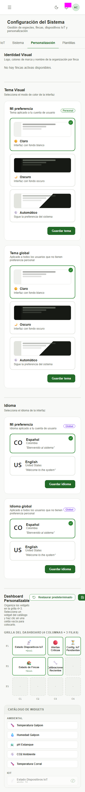
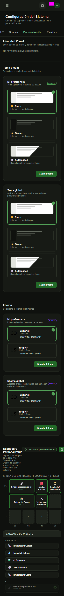
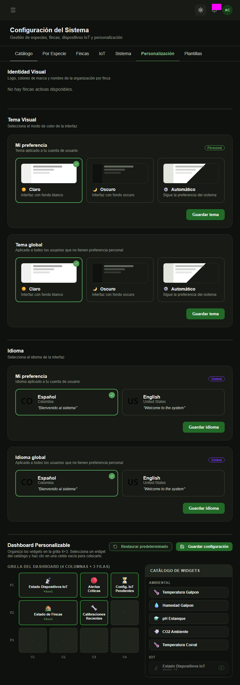
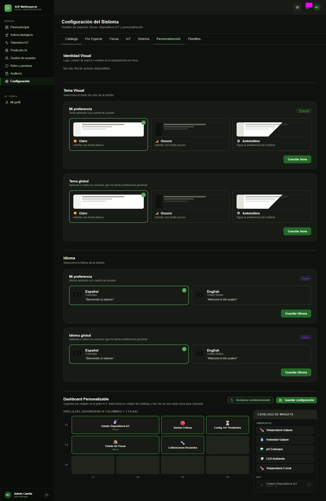

TC-DIS-76 — Consistencia visual
Configuración → Personalización (página completa) · RF-27 · Tema Claro/Oscuro · Pareja de accesibilidad TC-DIS-75
| Fecha de ejecución | 2026-09-29 19:49 (baseline) · 19:50 (estabilidad) |
| Ambiente | TEST (https://api.inmero.co/) |
| Rol usado | Administrador (cuenta compartida de QA) |
| Herramienta | Playwright toHaveScreenshot · fullPage + captura-completa.css · workers=1 |
| Viewports | movil 375×667 · tablet 768×1024 · escritorio 1440×900 |
| Estabilidad | Estable Baseline 6/6 y segunda corrida sin --update-snapshots 6/6 con 0 diferencias. |
| Estado del caso | Completo |
| Lecturas fijadas | GET de tema (personal y global fijados en Claro; el real era Oscuro por pruebas manuales), idioma y dashboard, con cuerpos reales de TEST. PATCH de personalización interceptado: nada se escribe en la cuenta. |
Hallazgos
- Usabilidad (verificado a mano el 29/09): tras pulsar el botón de tema del AppBar la interfaz pasa a Oscuro, pero la tarjeta marcada en «Mi preferencia» sigue siendo «Claro». La captura en oscuro lo muestra tal cual.
- Móvil 375 px: la cabecera de «Dashboard Personalizable» desborda; «Guardar configuración» queda cortado en el borde derecho y la grilla 4×3 llega al borde (se evalúa en TC-DIS-79).
Bloqueos
Sin bloqueos.
Capturas por estado y viewport
Personalización en tema Claro



Personalización en tema Oscuro (toggle del AppBar)
La UI en oscuro conserva «Claro» marcado en Mi preferencia (hallazgo de usabilidad).


